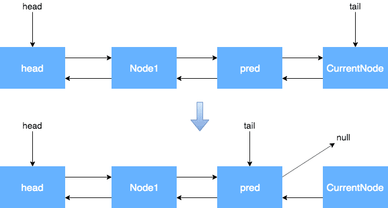
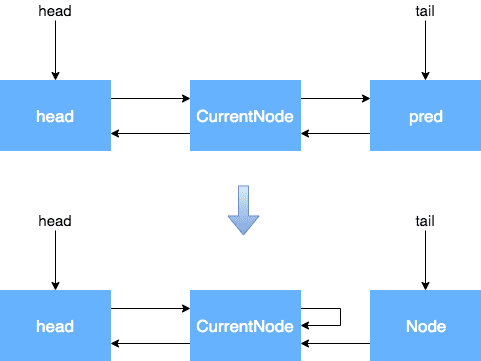
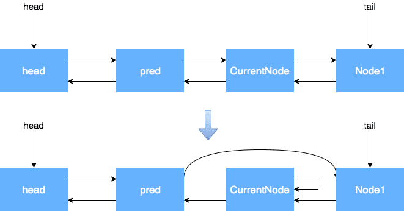

基础知识
基本方法
- thread.join: 让调用线程等待自己结束后在执行。
- Thread.yield: 礼让，自己先暂停，然后与其他线程共同竞争资源，静态方法(Thread.yield)。
线程中断机制
线程中断是给目标线程发送一个中断信号，开发者可以监听线程的中断状态选择是否停止执行线程逻辑。对于阻塞线程的方法如 sleep, wait 等会在中断状态后抛出 InterruptedException 异常。
- thread.interrupt: 中断目标线程，给目标线程发一个中断信号，线程被打上中断标记。
- Thread.interrupted: 判断目标线程是否被中断，会清除中断标记。
- thread.isInterrupted: 判断目标线程是否被中断，不会清除中断标记。
CAS
CAS (Compare-And-Swap) 是一种硬件对并发的支持，针对多处理器操作而设计的处理器中的一种特殊指令，用于管理对共享数据的并发访问。CAS是乐观锁技术，当多个线程尝试使用CAS同时更新同一个变量时，只有其中一个线程能更新变量的值，而其它线程都失败，失败的线程并不会被挂起，而是被告知这次竞争中失败，并可以再次尝试。
CAS 操作中包含三个操作数 —— 需要读写的内存位置（V）、进行比较的预期原值（A）和拟写入的新值(B)。如果内存位置V的值与预期原值A相匹配，那么处理器会自动将该位置值更新为新值B。否则处理器不做任何操作。CAS 即我认为位置 V 应该包含值 A；如果包含该值，则将 B 放到这个位置；否则，不要更改该位置，只告诉我这个位置现在的值即可。
ABA问题
出现原因：
- 线程1读取出指定内存地址的数据A，加载到寄存器，此时读取出来的原值不仅将作为要被计算的值A，还会作为比较值A。
- 此时线程1的cpu被线程2抢占了，线程2也从同样的内存地址中读取了同样的数据A，线程2还比线程1先执行完，线程2产生了新数据B，并且遵守了CAS原理把新数据B存入该内存地址（这个时候内存的值由A被该为B）。
- 线程2执行完之后，线程1又没抢过其它线程，此时cpu被线程3抢占，之后步骤和第2步一样，线程3从同样的内存地址中读取了数据B，线程3比线程1先执行完，线程3产生了新数据A（不意味着此A就是彼A，已经被替换了），并且遵守了CAS原理把新数据A存入该内存地址（这个时候内存的值由B又变为A）。
- 此时线程1执行完了，要遵守CAS原理存入数据，然后比较值A是原来的A，而执行内存地址中的A是被替换过的了，但原A的值与内存中的A值是相等的，根据CAS，线程1会把新的执行结果存入该内存地址。
解决办法：加版本号，多一步比较版本号。
锁的类型
锁从宏观上分类，分为悲观锁与乐观锁，这是一种思想。Java中重量级锁是悲观锁的一种，自旋锁、轻量级锁与偏向锁属于乐观锁。
乐观锁
乐观锁是一种乐观思想，即认为读多写少，遇到并发写的可能性低，每次去拿数据的时候都认为别人不会修改，所以不会上锁，但是在更新的时候会判断一下在此期间别人有没有去更新这个数据，采取在写时先读出当前版本号，然后加锁操作（比较跟上一次的版本号，如果一样则更新），如果失败则要重复读-比较-写的操作。乐观锁直到修改完成准备提交所做的的修改时才会将数据锁住。完成更改后释放。
java中的乐观锁基本都是通过CAS操作实现的，CAS是一种更新的原子操作，比较当前值跟传入值是否一样，一样则更新，否则失败。
悲观锁
悲观锁是就是悲观思想，即认为写多，遇到并发写的可能性高，每次去拿数据的时候都认为别人会修改，所以每次在读写数据的时候都会上锁，这样别人想读写这个数据就会block直到拿到锁。Synchronized 是悲观锁，无论哪个线程持有共享变量的锁，都采用独占的方式来访问这些变量，独占锁是一种悲观锁。
可重入锁
如果锁具备可重入性，则称作为可重入锁。像synchronized和ReentrantLock都是可重入锁，当一个线程执行到某个synchronized方法时，在其内调用了另一个synchronized方法，此时线程不必重新去申请锁，而是可以直接执行方法该方法。
可中断锁
可以响应中断的锁。在Java中，synchronized不是可中断锁，而Lock是可中断锁。
(非)公平锁
公平锁即尽量以请求锁的顺序来获取锁。同时有多个线程在等待一个锁，当这个锁被释放时，等待时间最久的线程会获得该锁，这种就是公平锁。
在Java中，synchronized是非公平锁，而 ReentrantLock 和 ReentrantReadWriteLock 默认情况下是非公平锁，但是可以设置为公平锁。
共享锁和独占(排他)锁
- 共享锁：允许多个线程同时获取锁，并发访问共享资源，如：ReadWriteLock的读锁。
- 独占锁：每次只能有一个线程能持有锁，它是悲观的加锁策略。ReentrantLock就是以独占方式实现的互斥锁。
读写锁
读写锁将对一个资源的访问分成了一个读锁和一个写锁。它允许一个资源可以被多个读操作访问，或者被一个写操作访问，但两者不能同时进行。如ReadWriteLock就是读写锁。
Java中的锁
在 Java 对象的数据结构中有一部分称为 MarkWord, 在其内有锁状态相关的标志位。Java 锁的状态总共有四种，级别由低到高依次为：无锁、偏向锁、轻量级锁、重量级锁，锁状态只能升级，不能降级。
自旋
自旋就是线程在不满足某种条件的情况下，一直循环做某个动作(空代码)。线程一旦进入阻塞(Block)，再被唤醒的代价比较高。所以常见的做法是先自旋一段时间，还没拿到锁就进入阻塞。
如果持有锁的线程能在很短时间内释放锁资源，那么那些等待竞争锁的线程就不需要做内核态和用户态之间的切换进入阻塞挂起状态，它们只需要等一等（自旋），等持有锁的线程释放锁后即可立即获取锁，这样就避免用户线程和内核的切换的消耗。
偏向锁
初次执行到同步代码块的时候，锁对象变成偏向锁(通过CAS修改对象头里的锁标志位)，字面意思是 偏向于第一个获得它的线程 的锁。执行完同步代码块后，线程并不会主动释放偏向锁，当第二次到达同步代码块时，线程会判断此时持有锁的线程是否就是自己(持有锁的线程ID也在对象头里)，如果是则正常往下执行。由于之前没有释放锁，这里也就不需要重新加锁。如果自始至终使用锁的线程只有一个，很明显偏向锁几乎没有额外开销，性能极高。
偏向锁是指当一段同步代码一直被同一个线程所访问时，即不存在多个线程的竞争时，那么该线程在后续访问时便会自动获得锁，从而降低获取锁带来的消耗，即提高性能。
偏向锁只有遇到其他线程尝试竞争偏向锁时，持有偏向锁的线程才会释放锁，线程是不会主动释放偏向锁的。偏向锁的撤销需要等待全局安全点，即在某个时间点上没有字节码正在执行时，它会先暂停拥有偏向锁的线程，然后判断锁对象是否处于被锁定状态，撤销偏向锁后恢复到无锁或轻量级锁的状态。
如果线程竞争激烈，那么应该禁用偏向锁。
轻量级锁(自旋锁)
轻量级锁是由偏向锁升级来的，偏向锁运行在一个线程进入同步块的情况下，当第二个线程访问偏向锁的时候，偏向锁就会升级为轻量级锁，其他线程会通过自旋的形式尝试获取锁，线程不会阻塞，从而提高性能。
在轻量级锁状态下继续锁竞争，没有抢到锁的线程将自旋，即不停地循环判断锁是否能够被成功获取。获取锁的操作，其实就是通过CAS修改对象头里的锁标志位。长时间的自旋操作是非常消耗资源的，一个线程持有锁，其他等待的线程就只能在空耗CPU，这种现象叫做忙等（busy-waiting）。如果多个线程用一个锁，但是没有发生锁竞争，或者发生了很轻微的锁竞争，那么就会一直用轻量级锁，允许短时间的忙等现象。这是一种折中的方法，短时间的忙等，换取线程在用户态和内核态之间切换的开销。
轻量级锁的获取主要有两种情况：
- 当关闭偏向锁功能时；
- 由于多个线程竞争偏向锁导致偏向锁升级为轻量级锁。
重量级锁
轻量级锁的忙等是有限度的，如果锁竞争情况严重，某个达到最大自旋次数的线程，会将轻量级锁升级为重量级锁（依然是CAS修改锁标志位，但不修改持有锁的线程ID）。当后续线程尝试获取锁时，发现被占用的锁是重量级锁，则直接将自己挂起（而不是忙等），等待将来被唤醒。
重量级锁是指当有一个线程获取锁之后，其余所有等待获取该锁的线程都会处于阻塞状态。这样会出现频繁地对线程运行状态的切换，线程的挂起和唤醒，从而消耗大量的系统资源。
锁优化
减小锁持有时间
不需要同步执行的代码，能不放在同步快里面执行就不要放在同步快内，可以让锁尽快释放；
减小锁粒度
它的思想是将物理上的一个锁，拆成逻辑上的多个锁，增加并行度，从而降低锁竞争。
比如说 ConcurrentHashMap 的实现，它把整个 HashMap 拆成了若干个小的 segment, 当有线程操作里面的数据时实际上操作的是被拆分后的某个小的 segment, 从而使 ConcurrentHashMap 允许多个线程同时进入，因此增加了并行度，达到了锁优化的目的。
增大锁粒度(锁粗化)
通常情况下，为了保证多线程间的有效并发，会要求每个线程持有锁的时间尽可能短，但在某些情况下需要增大锁粒度。比如说某个循环内的操作需要加锁，此时应该把锁放到循环外面，否则每次进出循环都需要获取与释放锁。
使用CAS
如果需要同步的操作执行速度非常快，并且线程竞争不激烈，这时候使用 CAS 效率会更高，因为线程阻塞唤醒会有比较大的性能消耗，此时使用 CAS 操作(原子类)会是非常高效的选择。
Java内存模型
参考 Java内存模型与线程。
volatile
- 可见性：线程可见性。
- 有序性：Java遵循as-if-serial语义，即单线程执行程序时，即使发生重排序，程序的执行结果不能被改变。而 volatile 会禁止指令重排序，因此可以避免其他线程访问到一个未初始化的对象(分配内存，初始化对象，引用赋值给变量)。
- 不能保证原子性。
原子类
原子类的原理是 CAS 操作，在 Java 中有许多原子类: AtomicBoolean, AtomicInteger, AtomicIntegerArray, AtomicIntegerFieldUpdater, AtomicLong, AtomicLongArray, AtomicLongFieldUpdater, AtomicMarkableReference, AtomicReference, AtomicReferenceArray, AtomicReferenceFieldUpdater, AtomicStampedReference。
synchronized
实现原理
在 JDK 1.6 之前 synchronized 是一个重量级锁，效率比较低下，在JDK 1.6 后 Jvm 为了提高锁的获取与释放效率对 synchronized 进行了优化，引入了偏向锁和轻量级锁。synchronized 是可重入锁，这样可以避免死锁。
在 HotSpot JVM 实现中，锁有个专门的名字：对象监视器(Object Monitor)。synchronized 的同步在软件层面依赖于JVM，看一段代码：
1 | public class Main { |
反编译后，其字节码如下：
1 | public class Main { |
monitorenter: 每个对象都是一个监视器锁(monitor)，当monitor被占用时就会处于锁定状态，线程执行monitorenter指令时尝试获取monitor的所有权：
- 如果monitor的进入数为0，则该线程进入monitor，然后将进入数设置为1，该线程即为monitor的所有者；
- 如果线程已经占有该monitor，只是重新进入，则进入monitor的进入数加1；
- 如果其他线程已经占用了monitor，则该线程进入阻塞状态，直到monitor的进入数为0，再重新尝试获取monitor的所有权；
monitorexit: 执行monitorexit的线程必须是锁对象所对应的monitor对象的所有者。指令执行时，monitor的进入数减1，如果减1后进入数为0，那线程退出monitor，不再是这个monitor的所有者。其他被这个monitor阻塞的线程可以尝试去获取这个monitor的所有权。monitorexit指令出现了两次，第1次为同步正常退出释放锁；第2次为发生异步退出释放锁；
可以看出synchronized的实现原理：synchronized的语义底层是通过一个monitor的对象来完成，其实 wait/notify 等方法也依赖于monitor对象，这就是为什么只有在同步的块或者方法中才能调用wait/notify等方法，否则会抛出java.lang.IllegalMonitorStateException的异常的原因。
两个指令的执行是JVM通过调用操作系统的互斥原语mutex来实现，这会导致在用户态和内核态之间来回切换，对性能有较大影响。
而对于 synchronized 方法，编译后会在方法上增加一个标识，当调用该方法时，如果检测到该标识的存在，执行线程将先获取monitor，获取成功之后才能执行方法体，方法执行完后再释放monitor。在方法执行期间，其他任何线程都无法再获得同一个monitor对象，本质上与上面 synchronized 代码块是一样的。
原子性，可见性，有序性
- 原子性: synchronized 通过 monitorenter 和 monitorexit 指令来保证原子性。
- 可见性: synchronized 规定线程在加锁时清空工作内存→在主内存中拷贝最新变量的副本到工作内存→执行完代码→将更改后的共享变量的值刷新到主内存中→释放互斥锁。
- 有序性: synchronized 无法禁止指令重排序，所以不能保证有序性。不过还有一种说法是由于 synchronized 修饰的代码，同一时间只能被同一线程访问，那么也就是单线程执行的，从as-if-serial语义而言，即单线程执行程序时，即使发生重排序，程序的执行结果不能被改变，所以可以保证其有序性。
wait¬ify
wait 和 notify 不在同一个线程中进行，且必须在 synchronized 语句中，JAVA 的 Object 类型都带有一个内存锁，在有线程获取该内存锁后，其它线程无法访问该内存，从而实现 JAVA 中的同步、互斥操作。notify 调用后并不会马上释放对象锁，而是在相应的 synchronized 语句块执行结束，自动释放锁后，JVM会在 wait 的线程中选取一个线程，赋予其对象锁，唤醒线程，继续执行。
AQS
结构概述
Java中的大部分同步类（Lock、Semaphore、ReentrantLock等）都是基于AbstractQueuedSynchronizer（简称为AQS）实现的。AQS是一种提供了原子式管理同步状态、阻塞和唤醒线程功能以及队列模型的简单框架。

当有自定义同步器接入时，只需重写第一层所需要的部分方法即可，不需要关注底层具体的实现流程。当自定义同步器进行加锁或者解锁操作时，先经过第一层的API进入AQS内部方法，然后经过第二层进行锁的获取，接着对于获取锁失败的流程，进入第三层和第四层的等待队列处理，而这些处理方式均依赖于第五层的基础数据提供层。
AQS核心思想是，如果被请求的共享资源空闲，那么就将当前请求资源的线程设置为有效的工作线程，将共享资源设置为锁定状态；如果共享资源被占用，就需要一定的阻塞等待唤醒机制来保证锁分配。这个机制主要用的是虚拟双向队列(FIFO)实现的，将暂时获取不到锁的线程加入到队列中，队列头节点不与任何线程关联，它是一个虚节点。
线程两种锁的模式：
- SHARED: 表示线程以共享的模式等待锁
- EXCLUSIVE: 表示线程正在以独占的方式等待锁
节点中waitStatus参数有下面几个枚举值：
- 0: 当一个Node被初始化的时候的默认值
- CANCELLED =1: 表示线程获取锁的请求已经取消了
- SIGNAL =-1: 表示线程已经处于唤醒状态
- CONDITION =-2: 表示节点在等待队列中，节点线程等待唤醒
- PROPAGATE =-3: 当前线程处在SHARED情况下，该字段才会使用
AQS使用一个Volatile的int类型的成员变量state来表示同步状态，通过内置的FIFO队列来完成资源获取的排队工作，通过CAS完成对State值的修改。可以通过修改State字段表示的同步状态来实现多线程的独占模式和共享模式（加锁过程）：

对于我们自定义的同步工具，需要自定义获取同步状态和释放状态的方式，也就是AQS架构图中的第一层：API层。接下来看看 AQS 中的重要方法。
acquire
1 | public final void acquire(int arg) { |
首先通过 tryAcquire 方法尝试去获取锁，如果获取锁成功则直接返回，该方法需要在子类中实现。如果 tryAcquire 方法获取锁失败返回 false 后则会调用 addWaiter 方法通过当前线程和锁模式新建一个节点 newNode，并将其加入等待队列尾部。然后调用 acquireQueued 方法将 newNode 之前的处于 CANCELLED 状态的节点出队列。
addWaiter：线程入队列
addWaiter 方法会通过当前线程和锁模式新建一个节点，并将其加入等待队列尾部。
1 | private Node addWaiter(Node mode) { |
注意头节点是通过空构造函数初始化的，其 waitStatus 默认为 0, 不关联线程，是一个虚节点。
acquireQueued：线程出队列
1 | final boolean acquireQueued(final Node node, int arg) { |
setHead方法是把当前节点置为虚节点，但并没有修改waitStatus，因为它是一直需要用的数据：
1 | private void setHead(Node node) { |
这里有两个原因可能导致走到第二个 if 语句：
- 前驱节点为头节点且当前没有获取到锁（可能是锁被抢占了）
- 前驱节点不为头结点
此时要判断当前线程是否要被阻塞，如需要则阻塞线程，防止无限循环（自旋）浪费资源。流程如下：

看一下 shouldParkAfterFailedAcquire 和 parkAndCheckInterrupt 方法的逻辑：
1 | private static boolean shouldParkAfterFailedAcquire(Node pred, Node node) { |
线程入队后能够挂起的前提是：其前驱节点的状态为SIGNAL，SIGNAL的含义是 前驱节点获取锁并且出队后要将自己唤醒，如果前驱结点的状态不是SIGNAL，那么自己就不能安心挂起，需要去找个安心的挂起点，下次被唤醒后再通过死循环重新尝试获取锁。流程如下：

cancelAcquire：CANCELLED节点生成
1 | private void cancelAcquire(Node node) { |
该方法的流程如下：获取当前节点的前驱节点，如果前驱节点的状态是CANCELLED，那就一直往前遍历，找到第一个不为CANCELLED的节点，将找到的Pred节点和当前Node关联，将当前Node设置为CANCELLED。根据当前节点的位置，考虑以下三种情况：
- 当前节点是尾节点：

- 当前节点是Head的后继节点：

- 当前节点不是Head的后继节点，也不是尾节点：

release：释放锁
1 | public final boolean release(int arg) { |
tryRelease 需要在子类中重写，看一下 unparkSuccessor 方法：
1 | // 唤醒后继结点 |
之所以要从后往前找，是因为在 addWaiter 方法中节点入队并不是原子操作，如果在 oldTail.next = node; 执行前就调用 unparkSuccessor 方法，则无法从前往后找了。另外在产生 CANCELLED 状态节点的时候，先断开的是Next指针，Prev指针并未断开，因此也是必须要从后往前遍历才能够遍历完全部的Node。
acquireInterruptibly
1 | public final void acquireInterruptibly(int arg) throws InterruptedException { |
当线程调用 parkAndCheckInterrupt 方法挂起后，下次被唤醒时，会返回是否中断的 bool 值，如果外部调用了 interrupt 方法，则返回 true，于是走抛出异常的逻辑，外部捕获后可以退出阻塞状态(如Lock.lockInterruptibly方法的使用)。
hasQueuedPredecessors
hasQueuedPredecessors 是公平锁加锁时判断等待队列中是否存在有效节点的方法。如果返回False，说明当前线程可以争取共享资源；如果返回True，说明队列中存在有效节点，当前线程必须加入到等待队列中。
1 | public final boolean hasQueuedPredecessors() { |
双向链表中，第一个节点为虚节点，并不存储任何信息。真正第一个有数据的节点，是从第二个节点开始的。当h != t时：如果(s = h.next) == null，则表示等待队列正在有线程进行初始化，但只是进行到了Tail指向Head，没有将Head指向Tail(参考新增节点的 addWaiter 方法流程，因为节点入队列并不是原子操作)，此时队列中有元素，需要返回True。如果(s = h.next) != null，说明此时队列中至少有一个有效节点。如果此时s.thread == Thread.currentThread()则说明等待队列的第一个有效节点中的线程与当前线程相同，那么当前线程是可以获取资源的；如果s.thread != Thread.currentThread()，说明等待队列的第一个有效节点线程与当前线程不同，当前线程必须加入进等待队列。
Lock
相关方法
Lock 是一个接口，其实现有 ReentrantLock, ReadLock 和 WriteLock 等，看一下相关方法：
lock()
获取锁，如果锁已被其他线程获取，则进行等待。
tryLock()
尝试获取锁，如果获取成功，则返回true，如果获取失败（即锁已被其他线程获取），则返回false，也就说这个方法无论如何都会立即返回。在拿不到锁时不会一直在那等待。
它有一个重载方法可以指定等待时长，当拿不到锁时会等待一定的时间，在时间期限之内如果还拿不到锁，就返回false。如果如果一开始拿到锁或者在等待期间内拿到了锁，则返回true。
lockInterruptibly()
当通过这个方法去获取锁时，如果线程正在等待获取锁，则这个线程能够响应中断，即中断线程的等待状态。也就是说，当两个线程同时通过lock.lockInterruptibly()想获取某个锁时，假若此时线程A获取到了锁，而线程B只有在等待，那么对线程B调用threadB.interrupt()方法能够中断线程B的等待过程。而用synchronized修饰的话，当一个线程处于等待某个锁的状态，是无法被中断的，只有一直等待下去。
unlock()
释放锁。
AQS
Lock 是通过 AQS 实现锁功能的，其实现的方法如下：
isHeldExclusively(): 该线程是否正在独占资源，只有用到Condition才需要去实现它。tryAcquire(int arg): 独占方式。arg为获取锁的次数，尝试获取资源。tryRelease(int arg): 独占方式。arg为释放锁的次数，尝试释放资源。tryAcquireShared(int arg): 共享方式。arg为获取锁的次数，尝试获取资源。负数表示失败；0表示成功，但没有剩余可用资源；正数表示成功，且有剩余资源。tryReleaseShared(int arg): 共享方式。arg为释放锁的次数，尝试释放资源，如果释放后允许唤醒后续等待结点返回True，否则返回False。
一般来说，自定义同步器要么是独占方式，要么是共享方式，只需实现tryAcquire-tryRelease, tryAcquireShared-tryReleaseShared中的一种即可。AQS也支持自定义同步器同时实现独占和共享两种方式，如ReentrantReadWriteLock。ReentrantLock是独占锁，所以实现了tryAcquire-tryRelease。
以非公平锁为例看一下非公平锁与AQS之间方法的关联之处：

ReentrantLock
ReentrantLock 实现了 Lock 接口，并提供了与 synchronized 相同的互斥性和内存可见性，但相较于 synchronized 提供了更高的处理锁的灵活性。看一下其 lock 和 unlock 的源码：
1 | public class ReentrantLock implements Lock, java.io.Serializable { |
lock
NonfairSync 和 FairSync 都继承自 Sync, 而 Sync 继承自 AbstractQueuedSynchronizer(AQS)：
1 | // NonfairSync |
对于 NonfairSync 来说首先通过 CAS 操作，判断 state 是否是 0(当前锁未被占用)，如果是 0 则把它置为 1，并且设置当前线程为该锁的独占线程，表示获取锁成功。当多个线程同时尝试占用同一个锁时，CAS操作只能保证一个线程操作成功，剩下的只能排队。
非公平即体现在这里，如果占用锁的线程刚释放锁，state 置为 0，而排队等待锁的线程还未唤醒时，新来的线程就直接抢占了该锁，那么就“插队”了。
非公平锁
acquire 方法的实现在 AQS 中，在上面已经看过了，它会调用重写的 tryAcquire 方法：
1 | // NonfairSync |
非公平锁会通过 CAS 操作判断当前有没有线程占用锁，没有则直接占用成功，并修改 state。否则判断当前占用锁的线程是不是本线程，若是则叠加 state 表示重入锁的次数并返回 true。否则返回 false 标识占用锁失败，进行 AQS 的下一步操作。
公平锁
1 | // FairSync |
相比于非公平锁，它多调用了 hasQueuedPredecessors 方法来判断等待队列中是否存在有效节点，存在则说明已经有线程在等待获取锁了，公平起见，此时不能把锁给调用者。
unlock
unlock 调用的是 AQS.release 方法。若释放锁成功，则唤醒头结点的下个节点关联的线程。子类需实现 tryRelease 方法进行真正的释放工作：
1 | // Sync |
State 字段在 ReentrantLock 中的变化过程：
- State 初始化的时候为 0，表示没有任何线程持有锁；
- 当有线程持有该锁时，值就会在原来的基础上+1，同一个线程多次获得锁则会多次+1，这里就是可重入的概念；
- 解锁时对这个字段-1，一直到 0 则锁释放成功。
ReadWriteLock
ReadWriteLock 是一个接口，有一个实现类是 ReentrantReadWriteLock:
1 | public interface ReadWriteLock { |
先看写锁：
1 | protected final boolean tryAcquire(int acquires) { |
上面的 writerShouldBlock 方法是一个抽象方法，在公平锁中返回 hasQueuedPredecessors() 方法的返回值；在非公平锁中返回 false。
再看读锁：
1 | protected final int tryAcquireShared(int unused) { |
await&signal
单个 Lock 可能与多个 Condition 对象关联。在 Condition 对象中，与 wait、notify 和 notifyAll 方法对应的分别是await、signal 和 signalAll。
Condition 实例实质上被绑定到一个锁上，要为特定 Lock 实例获得Condition 实例，请使用其 newCondition() 方法。
调用signal()方法后一定要释放当前占用的锁，这样被唤醒的线程才能有获得锁的机会，才能继续执行。
与synchronized比较
| 类别 | synchronized | Lock |
|---|---|---|
| 存在层次 | Java的关键字，在jvm层面上实现 | 一个接口 |
| 锁的获取 | 阻塞等待 | 分情况而定，Lock有多个锁获取的方式，可以尝试获得锁，线程可以不用一直等待 |
| 锁的释放 | 1、以获取锁的线程执行完同步代码，释放锁 2、线程执行发生异常，jvm会让线程释放锁 | 在finally中必须释放锁，不然容易造成线程死锁 |
| 中断响应 | 只能等待锁的释放，不能响应中断 | 可以用interrupt来中断等待 |
| 公平性 | 非公平锁 | 公平和非公平都可 |
| 性能 | 竞争资源不激烈，两者的性能差不多 | 竞争资源非常激烈时Lock的性能要远远优于synchronized |
CountDownLatch
CountDownLatch的计数器只能使用一次，它一般用于某个线程等待若干个其他线程执行完任务之后，它才执行。
1 | public static void test() throws Exception { |
CyclicBarrier
CyclicBarrier 的字面意思是回环栅栏，通过它可以实现让一组线程等待至某个状态之后再全部同时执行。叫做回环是因为当所有等待线程都被释放以后，CyclicBarrier可以使用reset方法重置。当调用await()方法之后，线程就处于barrier了。
CyclicBarrier一般用于一组线程互相等待至某个状态，然后这一组线程再同时执行。
1 | public static void test() throws Exception { |
Semaphore
Semaphore翻译成字面意思为信号量，Semaphore可以控制同时访问的线程个数，通过 acquire() 获取一个许可，如果没有就等待，而 release() 释放一个许可。Semaphore其实和锁有点类似，它一般用于控制对某组资源的访问权限。
1 | public static void test() throws Exception { |
Executors
接口与参数
ThreadPoolExecutor->AbstractExecutorService->ExecutorService->Executor.
1 | public ThreadPoolExecutor(int corePoolSize, int maximumPoolSize, long keepAliveTime, TimeUnit unit, BlockingQueue<Runnable> workQueue) |
相关重要参数：
- corePoolSize：核心池的大小，在创建了线程池后默认情况下线程池中并没有任何线程，而是等待有任务到来才创建线程去执行任务，除非调用了prestartAllCoreThreads()或者prestartCoreThread()方法；
- maximumPoolSize：线程池最大线程数，它表示在线程池中最多能创建多少个线程；
- keepAliveTime：表示线程没有任务执行时最多保持多久时间会终止；默认情况下，只有当线程池中的线程数大于corePoolSize时，keepAliveTime才会起作用，除非设置了allowCoreThreadTimeOut(boolean)方法。
- unit：参数keepAliveTime的时间单位；
- workQueue：一个阻塞队列，用来存储等待执行的任务，如果队列满了则新建非核心线程执行任务；
- RejectedExecutionHandler: 拒绝策略，是指将任务添加到线程池中时，线程池拒绝该任务所采取的相应策略。抛异常或丢弃任务等。
阻塞队列可选值：
- ArrayBlockingQueue: 可以限定队列的长度；如果总线程数到了maximumPoolSize且队列满了则发生错误；
- LinkedBlockingQueue: 队列长度没有限制，即所有超过核心线程数的任务都将被添加到队列中；
- SynchronousQueue: SynchronousQueue是一个没有数据缓冲的BlockingQueue(队列只能存储一个元素)，生产者线程对其的插入操作put必须等待消费者的移除操作take，反过来也一样，消费者移除数据操作必须等待生产者的插入。
线程池工作流程如下：

实现优先级
可比较的 Runnable 加上优先级阻塞队列 PriorityBlockingQueue.
1 | public class PrioritizedRunnable implements Runnable, Comparable<PrioritizedRunnable> {} |
submit&execute
- execute() 参数 Runnable ；submit() 参数 (Runnable) 或 (Runnable 和 结果 T) 或 (Callable)
- execute() 没有返回值；而 submit() 有返回值
- submit() 的返回值 Future 调用 get 方法时，可以捕获处理异常；execute()只有通过ThreadFactory主动设置线程的异常处理类才能感知到提交的线程中的异常信息。
1 | public interface ThreadFactory { |
对于 execute 方法可以给 newThread 中创建的 Thread 对象设置UncaughtExceptionHandler。而 submit 不能这样，因为它没有抛出异常而是把保存起来在 get 时候才处理。
内置线程池
SingleThreadExecutor
创建一个单线程化的线程池，它只会用唯一的工作线程来执行任务，保证所有任务按照指定顺序(FIFO, LIFO, 优先级)执行。
1 | public static ExecutorService newSingleThreadExecutor(){ |
FixedThreadPool
创建一个定长线程池，可控制线程最大并发数，超出的线程会在队列中等待。
1 | public static ExecutorService newFixedThreadPool(int nThreads){ |
CachedThreadPool
SynchronousQueue是一个只有1个元素的队列，入队的任务需要一直等待直到队列中的元素被移出。核心线程数是0，意味着所有任务会先入队列；最大线程数是Integer.MAX_VALUE，可以认为线程数量是没有限制的。KeepAlive时间被设置成60秒，意味着在没有任务的时候线程等待60秒以后退出。CachedThreadPool适用于执行很多的短期异步任务的小程序。
1 | public static ExecutorService newCachedThreadPool(){ |
ScheduledThreadPool
创建一个定长线程池，支持定时及周期性任务执行.
1 | public ScheduledThreadPoolExecutor(int corePoolSize) { |
线程池状态
1 | private final AtomicInteger ctl = new AtomicInteger(ctlOf(RUNNING, 0)); |
状态转换如下图：

源码解读
首先看看 execute 方法：
1 | public void execute(Runnable command) { |
然后看看 Worker 的执行逻辑：
1 | public void run() { |
线程执行时，调用 runWorker 方法，这里面会调用 getTask 获取任务：
1 | private Runnable getTask() { |
关闭线程池
void shutdown(): 线程池队列中的任务会执行，无法提交新的任务，该方法不会等待执行的任务执行完成，可以使用 awaitTermination 实现这个目的。List<Runnable> shutdownNow(): 试图关闭正在执行的任务(任务需要处理中断)，不会执行已经提交到队列但还没执行的任务，返回等待执行的任务列表，同时此方法不会等待那些正在执行的任务执行完，等待执行的任务会从线程池队列移除。
关闭线程池主要利用的是线程的中断机制，看看代码：
1 | public void shutdown() { |
看下 interruptIdleWorkers 和 interruptWorkers 的区别：
1 | private void interruptIdleWorkers() { |
看看 getTask 中对中断的处理：
1 | private Runnable getTask() { |
小结
Executors各个方法的弊端，因此可以直接使用 ThreadPoolExecutor 构造方法创建线程池：
- newFixedThreadPool 和 newSingleThreadExecutor: 主要问题是堆积的请求处理队列可能会耗费非常大的内存，甚至OOM。
- newCachedThreadPool 和 newScheduledThreadPool: 主要问题是线程数最大数是Integer.MAX_VALUE，可能会创建数量非常多的线程，甚至OOM。